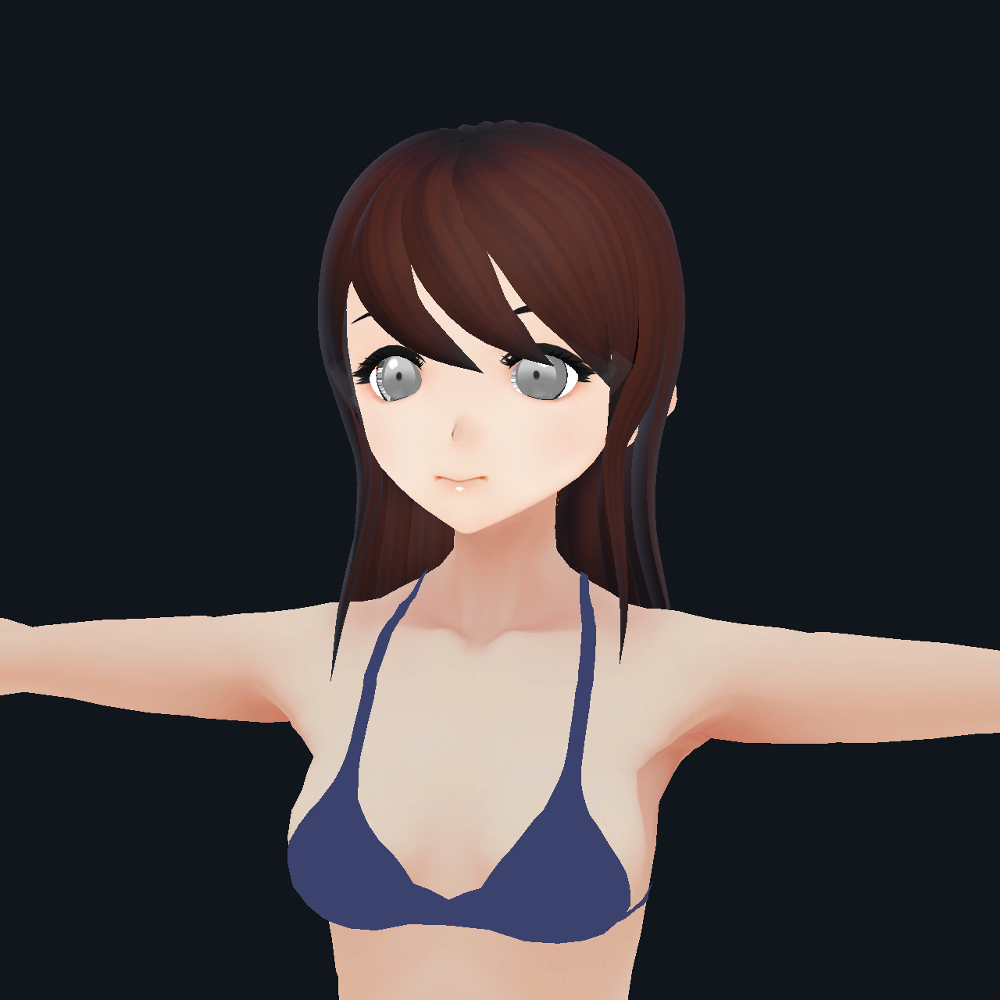
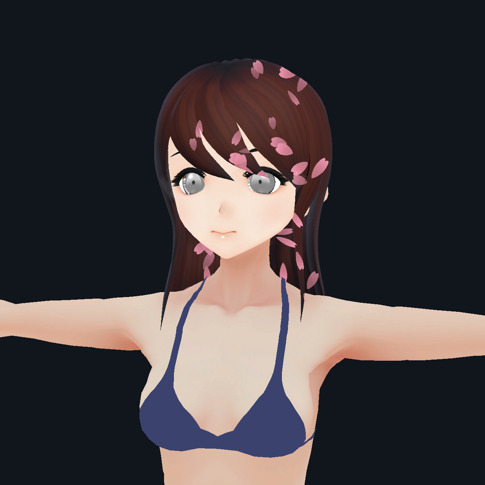
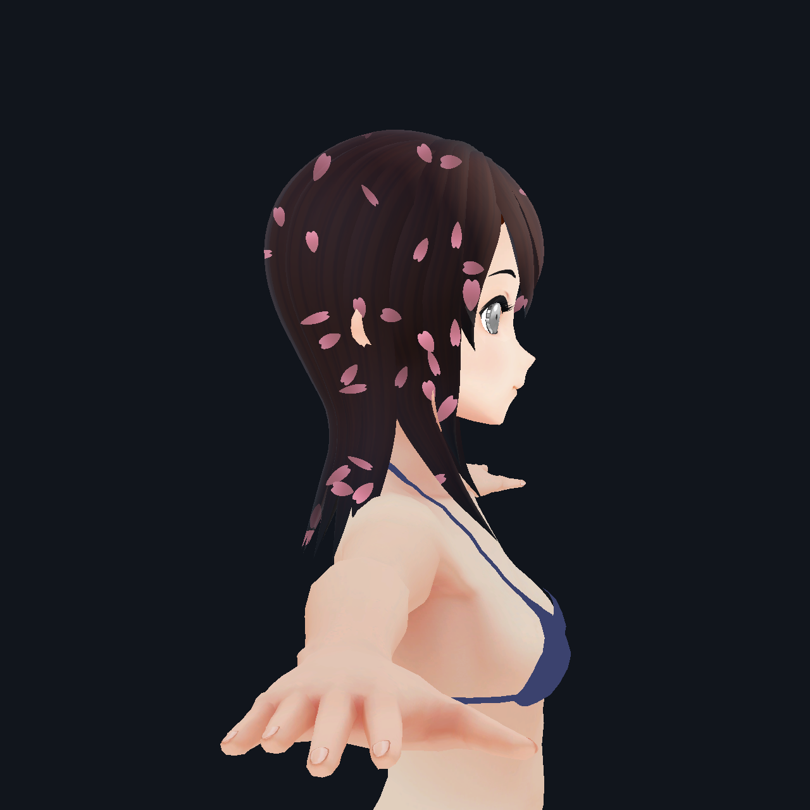
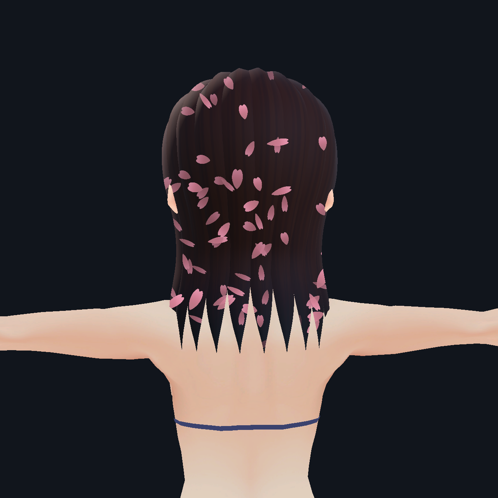

Sakura Hair · Interior Fall
머리카락 안의 별도 공간에서 떨어지는 벚꽃 · 앞 3초 고정 / 뒤 3초 카메라 회전 · Unity Play Mode 실제 캡처 · 6초 / 30fps
같은 조명에서 효과 켜기 / 끄기

효과 끄기
효과 켜기다른 각도

측면
후면새 씬: Assets/06.Scenes/SakuraHairDemo.unity
조절: Assets/SakuraHairDemo/Materials/SakuraHair.mat